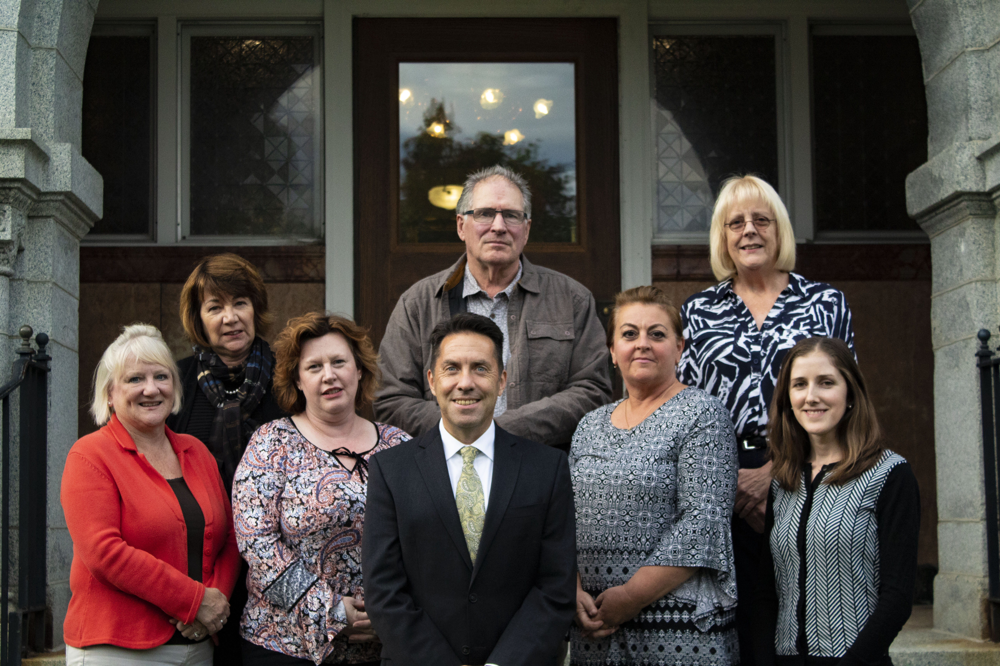
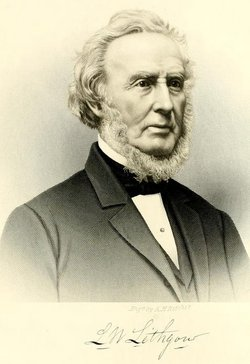

© 2019 Lithgow Library Capital Campaign, All Rights Reserved
PO Box 2456 - Augusta, Maine 04338-2456
Email: info@lithgowfriends.org | Phone: 207.547.4547
The Friends of Lithgow Library commissioned local artist Christopher Cart to create a new piece of artwork to commemorate the completion of the expansion and restoration of the library in 2016. Visit the artist's website at christophercart.com for more information about this unique panting which now hangs proudly in the new wing of Lithgow Library.
A small group of library supporters and former library trustees came together in 2001 to form the Friends of Lithgow Library. At that time, the community had begun to express concerns for the library and the 1979 addition which were both in need of repair, not ADA accessible and just simply too small to meet the needs of its patrons. In 2007, a city bond proposal seeking to address those needs failed passage. Three years later, newly elected Friends board members joined by concerned citizens, began to explore the possibility of another bond initiative and made a commitment to begin a private fundraising campaign toward the proposed expansion and restoration. Augusta residents approved an $8 million bond question in June 2014 and the long-awaited project took a step closer to becoming a reality.
In May of 2015, the City of Augusta broke ground for the $11 million expansion and modernization of Lithgow Public Library which was completed in August 2016. The Friends of Lithgow led the Capital Campaign and raised $3 million through private donations towards total project costs. Soon after the grand reopening of the library, the Friends embarked on another endeavor, the complete restoration of the historic Reading Room in the original 1895 wing of the library. The total project cost was $100,000 and took two years to complete. Recently, the Board established the Friends of Lithgow Library Endowment Fund to provide supplemental funding for programs and materials to the library to augment public funding.
After 124 years, the extensive restoration and recent addition to the original structure will ensure that Lithgow Library will continue to be a place of learning, inspiration and community for generations to come.
David R. Madore
President
Staci Fortunato
Secretary
Charlotte Thurlow
Treasurer
April Cusick
Charles “Wick” Johnson
Emily Mullen
Jennifer Small
Patty Tardiff
What began as the Augusta Literary and Library Association on Water Street became the Lithgow Library and Reading Room when a generous bequest to the city from Llewellyn W. Lithgow allowed the Trustees to incorporate and receive the funds for the purpose of constructing a public library.
Llewellyn W. Lithgow
The Trustees secured two lots at the corner of Winthrop and State Streets, and thereafter solicited contributions to the building fund. Andrew Carnegie donated $9,000 on the condition that an equal amount be raised through local subscriptions, as an early version of the “matching grant.” The Building Committee selected Neal and Hopkins Architects of Pittsburgh to design the new library, and in May of 1894 the community gathered for an elaborate celebration and parade as the cornerstone was laid.
Eighteen months later, the Trustees held an open house so the citizens could examine their new library. Then on February 3, 1896, the Trustees officially received the library from the Building Committee and held a dedication ceremony with the contributors as invited guests. For a cost of $51,850 (including the land) Augusta had achieved Mr. Lithgow’s dream of a public library, a beautiful Renaissance Romanesque “people’s university”. With its impressive quartered oak pillars, gray Norridgewock granite, its delicate mosaics, its gem-like stained glass windows and ornate gold leaf ornamentation the new library paid tribute to the written word and the life of the mind.
Over a century ago, Llewellyn Lithgow’s gift to the community opened its doors. Those days of closed stacks and silent reading are gone, but Mr. Lithgow’s vision for Augusta’s public library lives on. In 2019, Lithgow Public Library attracted over 129,000 visitors, circulated 167,500 library items, drew in over 7,900 program attendees with its offerings for infants, toddlers, preschoolers, children and teens, and sponsored programs for adults, including free computer instruction. Mr. Lithgow could not have foreseen computer technology, the Internet or DVDs; but the purpose of the public library remains the same – access for all.